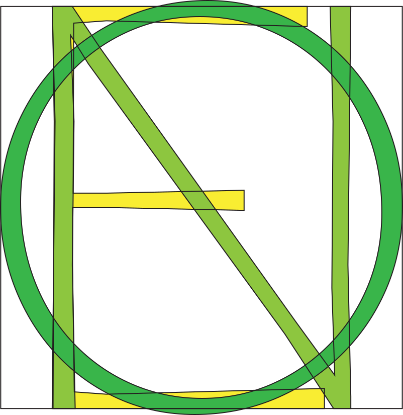

Amarna is a semi-glyphic humanist sans-serif typeface, designed for dual use in both titling and text. It derives inspiration from the wonderfully earthy, almost terminally groovy typefaces coming out of the United Kingdom from the 1920s up to the ‘40s, most notably Berthold Wolpe’s Albertus (Monotype, 1932).
There’s something that’s just so appealing to me about the typefaces of this era — it’s clear to me that at this point in time, the novelty of the sans-serif typeface had not quite worn off. Looking at these early typefaces, it still feels like the designers of the era, used to drawing the sinuous curves and high-contrast strokes of the serif typefaces of the day, were still working out the kinks.
Albertus, in particular — there’s something really nice about the very odd juxtaposition between its grandiose, old-fashioned capitals and their haughty proportions, compared to the tall, blocky and amicable lower-case letterforms, with their low stroke contrast, high x-height and wide-open apertures. And yet, somehow, those two extremes are made to complement each other beautifully.
I wanted to capture some of this dissonance in Amarna, while tempering it slightly with some more modern elements, bringing it up to speed with the demands of current-day designers. I’ve attempted to strike a balance between the old-fashioned proportions of typefaces like Albertus and the more uniform proportions that are idiomatic of modern sans-serif typefaces. Compared to Albertus, I’ve also made the lower-case a little more slender, a little more readable, allowing Amarna to be used more easily for body text typesetting (I've always found long strings of mixed-case text set in Albertus hard to read). Otherwise, I’ve tried to maintain as much as I can of Albertus and its ilk.
That era produced some of my favourite typefaces; I can only hope that Amarna is a fitting tribute.
